파일에서 DAC까지, 손대지 않고.
Mono는 로컬 고해상도 음원과 TIDAL · Qobuz를 한 라이브러리에서 재생하는 Windows용 오디오 플레이어입니다. 라운지를 열면 들어온 기기들이 같은 곡을 같은 시각에 듣습니다.
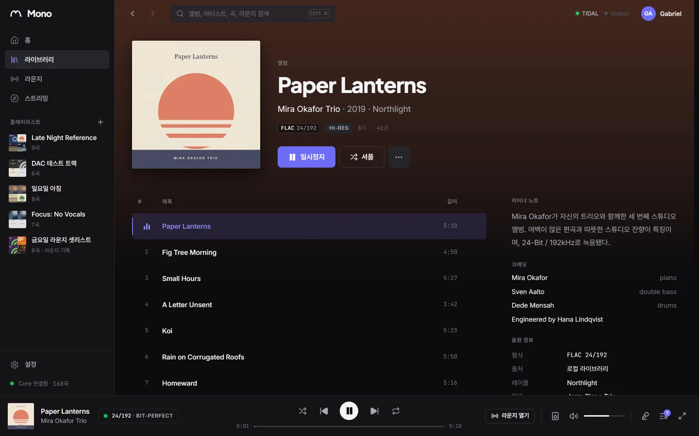
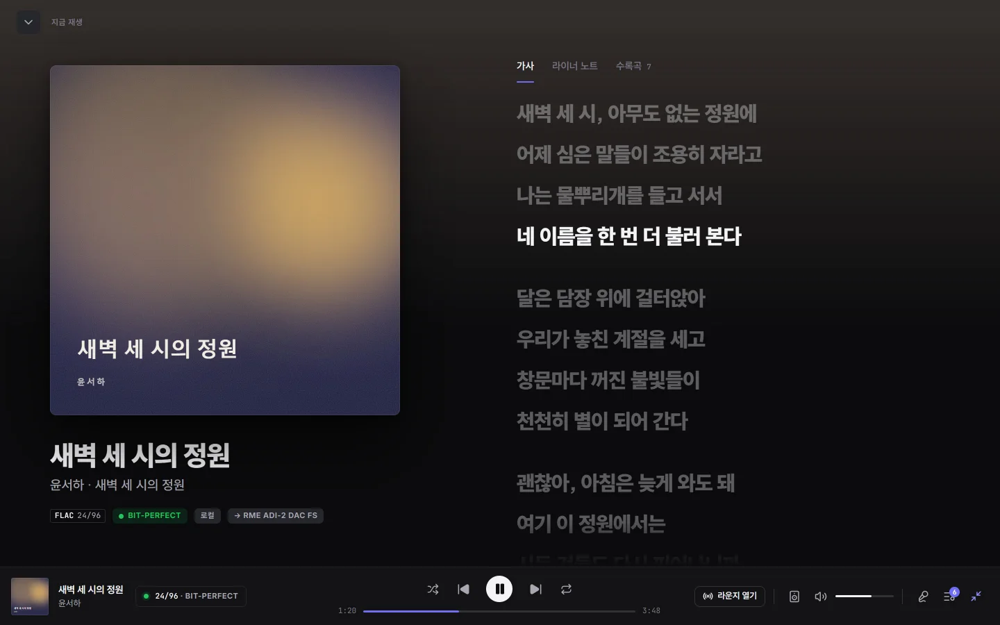
실제 앱 화면입니다. 캡처에 보이는 앨범과 사용자는 예시 데이터입니다.
01 신호 경로
신호에 무엇이 개입했는지,
숨기지 않습니다.
곡이 파일에서 장치까지 가는 길을 단계마다 보여 줍니다. 아무것도 손대지 않았으면 초록, DSP가 끼어들면 앰버입니다. 화면은 실제로 한 일만 말합니다.
-
01
소스
로컬 FLAC · WAV · ALAC · AIFF와 TIDAL · Qobuz. 어디서 온 곡이든 같은 경로로 들어옵니다.
로컬 FLAC 96kHz 24bit 2ch
-
02
Mono Core
큐와 재생 시계를 맡습니다. 샘플에는 손대지 않습니다.
원본 그대로 전송
-
03
DSP 우회 헤드폰 EQ
꺼 두면 건너뜁니다. 켜면 앰버 램프가 들어오고, 무엇이 끼어들었는지 이름으로 적힙니다.
신호에 손대지 않습니다 헤드룸 -3 dB · 2배 업샘플링 96 → 192 kHz
-
04
출력 장치
WASAPI 배타 모드나 ASIO로 장치를 직접 엽니다. 윈도우 믹서를 거치지 않습니다.
WASAPI 배타 모드 · Bit-Perfect WASAPI 배타 모드 · 가공된 신호
플레이어 바의 BIT-PERFECT 칩은 DSP가 꺼져 있고, 장치가 곡의 규격을 그대로 받고, 배타로 붙어 있고, 볼륨을 디지털로 줄이지 않았을 때만 켜집니다.
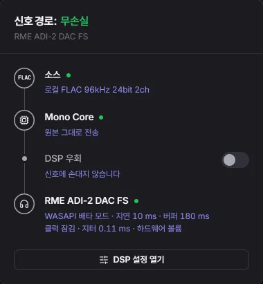
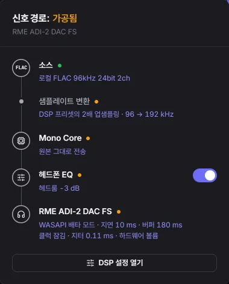
02 라이브 라운지
혼자 깊게 듣거나,
라운지를 열어 함께 듣거나.
듣던 방을 그대로 공개로 바꾸면 라운지가 됩니다. 큐도 재생 위치도 그대로입니다. 들어온 기기들은 호스트의 재생 시각과 곡 순서를 따라갑니다.
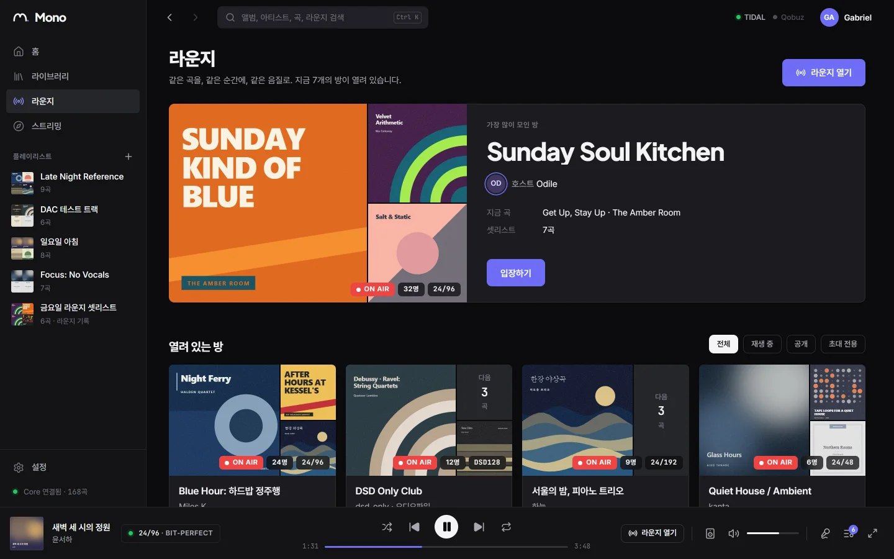
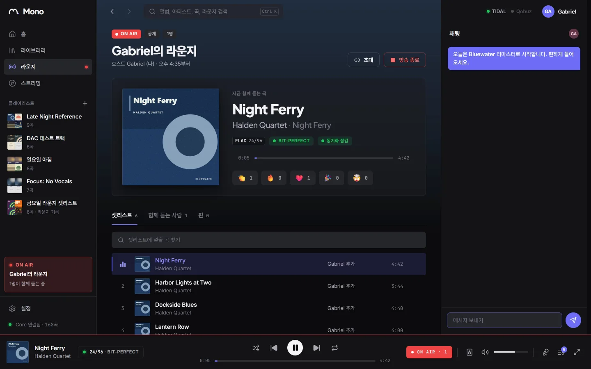
라운지 목록과 호스트의 방. 캡처에 보이는 방과 사람은 예시 데이터입니다.
방송 중인 방에는 빨간 표시가 붙습니다. 빨강은 이 뜻으로만 씁니다.
- 같은 시각
- 모든 기기가 Core의 시계에 맞춰 같은 지점을 재생합니다. 출력 장치의 오프셋과 지터는 설정 화면에 숫자로 나옵니다.
- 셋리스트 · 채팅 · 반응
- 호스트가 셋리스트를 짜고, 듣는 사람은 채팅과 반응을 남깁니다. 전부 한 화면에 있습니다.
- 기록
- 끝난 라운지는 지난 세션에 남습니다. 그날의 셋리스트를 플레이리스트로 만들 수 있습니다.
- Discord
- 설정에서 켜면 듣는 곡이 Discord 프로필의 활동 카드에 나옵니다. Discord 개발자 포털에서 만든 Application ID가 필요합니다.
03 인터페이스
색은 앨범 커버에서 나옵니다.
섀시는 무채색입니다. 어두운 테마와 밝은 테마 중에 고르면 되고, 화면의 색은 재생 중인 앨범이 정합니다.
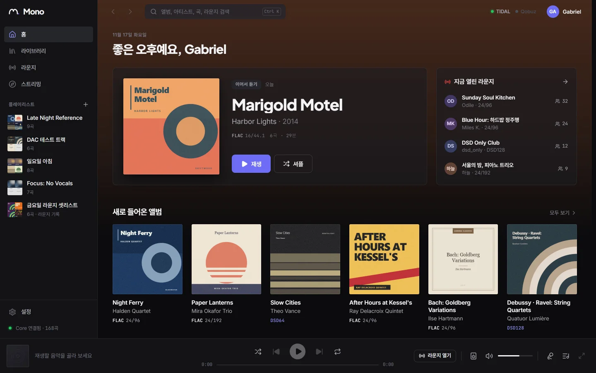
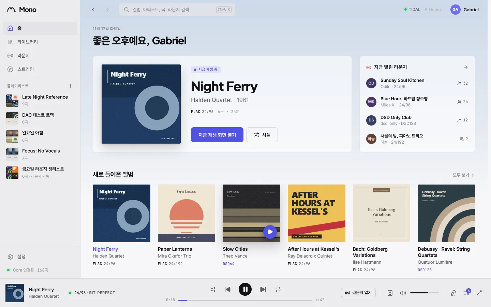
-
가사 집중 모드
지금 재생 화면은 커버와 가사만 남깁니다. 지금 소절만 또렷하고 나머지는 물러납니다.
-
고정폭 오디오 스펙
24/96, FLAC 같은 규격과 시간은 고정폭 숫자로 적어 자리가 흔들리지 않습니다.
-
오프라인 내장 글꼴
글꼴을 앱에 함께 실었습니다. 인터넷이 없어도 같은 모습입니다.
04 설치 방법
세 단계면 소리가 납니다.
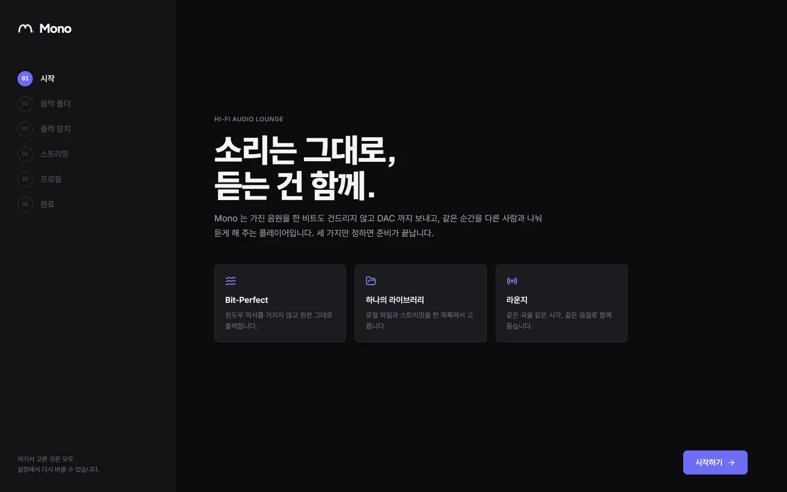
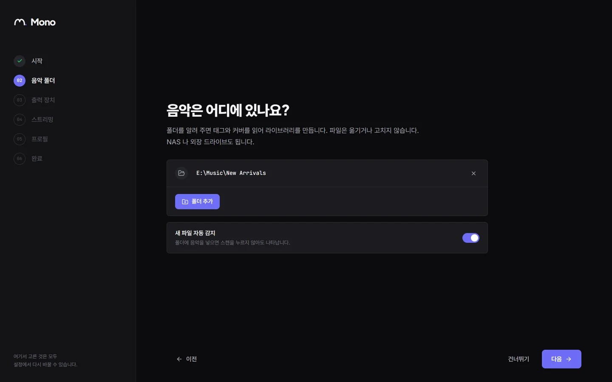
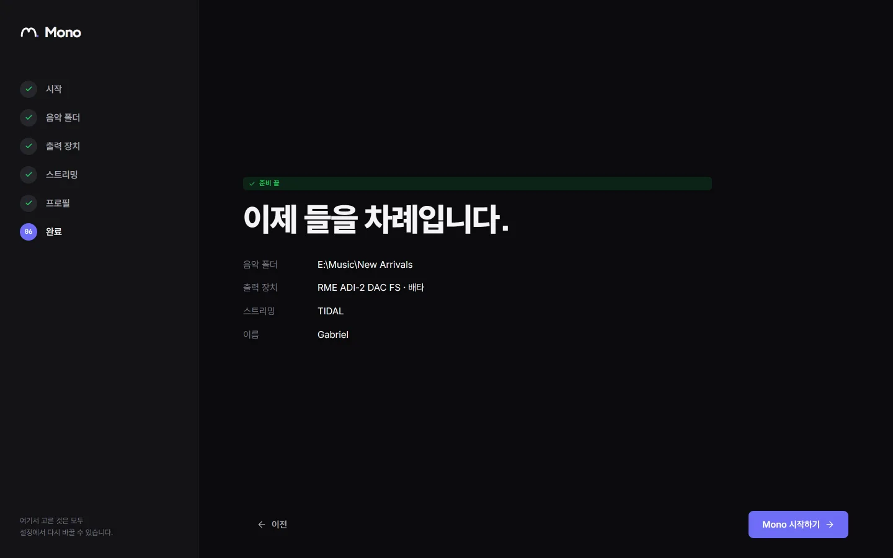
받은 파일은 같은 릴리스의 SHA256SUMS.txt와 맞춰 볼 수 있습니다. 이전 버전 보기
macOS용은 아직 없습니다.
Mono의 출력 엔진은 지금 Windows의 WASAPI와 ASIO에 맞춰져 있습니다. macOS에서 장치를 직접 여는 경로(CoreAudio)는 만들지 않았습니다.
Windows PC에 Mono를 설치해 두면, Mac을 포함한 같은 네트워크의 다른 기기에서 브라우저로 붙어 조작할 수 있습니다. 붙을 때는 Mono가 보여 주는 6자리 페어링 코드를 씁니다. 소리는 Windows PC에 연결한 장치에서 납니다.
지원 형식
- 무손실
- FLAC · WAV · AIFF · ALAC (M4A)
- 손실
- MP3 · AAC
- 비트 뎁스
- 16 · 24 bit
- 샘플레이트
- 장치가 받는 값 그대로 (리샘플링 없음)
- 스트리밍
- TIDAL · Qobuz (각 서비스 계정 필요)
- DSD
- DSF · DFF는 라이브러리에 표시. 재생은 아직 지원하지 않음
시스템 사양
- 운영체제
- Windows 10 · 11 (64-bit)
- 런타임
- WebView2 (Windows 11 기본 포함). .NET은 설치 파일에 포함
- 출력
- WASAPI 배타 · 공유, ASIO
- 장치
- USB DAC · 오디오 인터페이스 · 내장 사운드
- 업데이트
- 앱 안에서 확인하고 설치
- 가격
- 무료